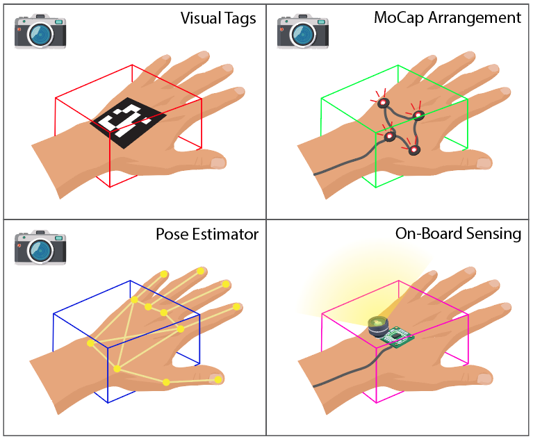
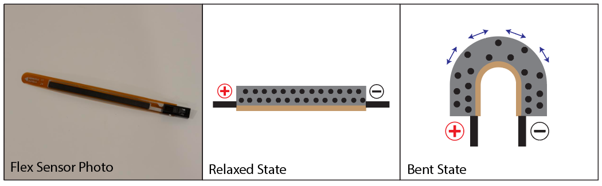
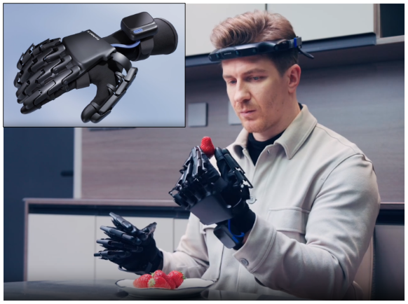
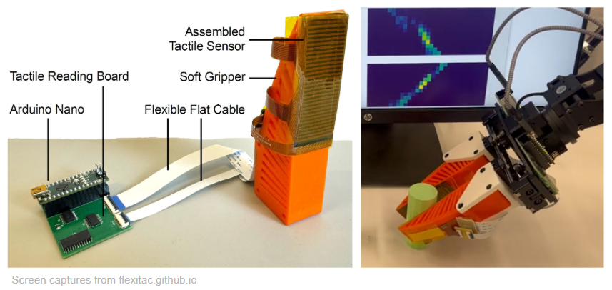
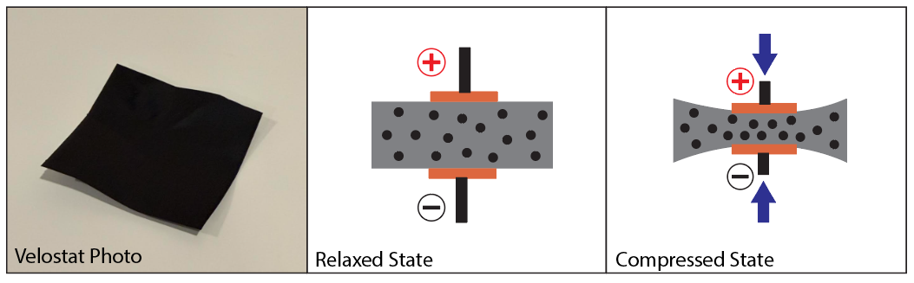
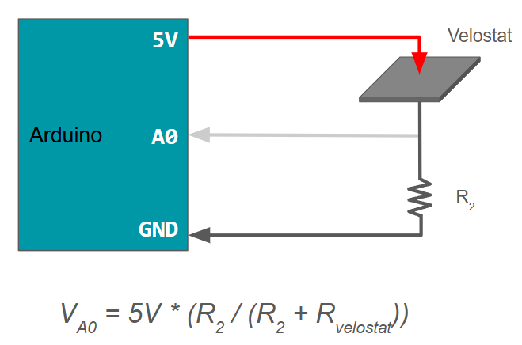
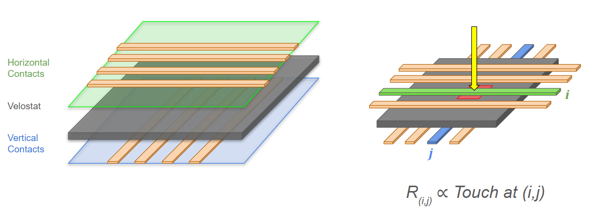

Thoughts on Hand Capture
And Reconstructing FlexiTac, Part One
Lately I have been thinking a lot about data collection for VLAs and world models. For really complex manipulation tasks, especially performed by a trained expert, you probably need to capture human hand movements with as little interference as possible. Don’t get me wrong, you can do a lot with two- or three-finger grippers and teleoperation. However, I also would not ask a professional chef to cook a meal with pinchers. Eventually robotics may require expert direct demonstrations, and it’s interesting to think about how you might capture it (if the cooking example doesn’t resonate, pick your favorite skilled manipulation: surgery, welding, concert violin, etc).
The most foreign aspect of this, to me, is how to capture touch data and contacts. The second half of this post and all of the next are dedicated to building a small touch sensing grid following the designs of the FlexiTac from Yunzhu Li's lab at Columbia.
Hand Capture
There are really three types of data you might want to capture from a "hands-on" demonstration: (1) where the hand is in space (position / orientation of the hand frame), (2) the individual joint positions of the hand, and (3) what the hand itself is sensing (namely touch sensing, but this could include other things like temperature).
The first one (hand frame) could be solved either externally with cameras that track the hand / markers on the hand, and/or with sensors on the hand itself, treating it more like a flying object that needs to track its own position with VIO or SLAM.
Side note, one of my first projects at APL, back when I still remembered something about mechanical engineering, was to design a wrist piece for the MPL (an anthropomorphic arm+hand) that had embedded infrared LEDs in a known arrangement. An external motion tracking camera could then provide an exact position and rotation of the hand in real time. This remains a very strong candidate for something like hand frame tracking.

The last option (on-board tracking) is probably the most difficult but has the major advantage of not needing line-of-sight to a sensor. If you wanted to capture the movements of, say, a mechanic working underneath a car, you probably need that sort of thing. For general household activities, the other options are probably simpler.
The second capture need, hand joint positioning, is much harder but I think still doable if you are willing to get creative. Again there are external or on-board (on-hand?) options: models that track the hand skeleton / envelope from external images (also an option for the prior point), or you could consider sensing up each joint directly. Interesting options here include flex sensors, which change resistance as they bend, and small rotation encoders on some sort of lightweight exoskeleton. The exoskeleton, if it can be made compact enough, would give the most accurate information.
Flex sensors are noteworthy because they work in a very similar way to the FlexiTac touch sensor explored below. Conductive particles are suspended in some material, such that they get closer or further apart as the material deforms. In the case of a bend sensor, the particles are spread apart as the material bends around some radius, increasing the resistance of the material. By monitoring the resistance across the bending region, you can roughly determine the current bend angle:

This is just my commentary on hypothetical solutions. The point is really that tracking positions and joint angles is a familiar and mostly-solvable aspect of robotics. If you stare at this problem long enough, you come up with some ideas.
For an exoskeleton, the DAS Dex from GenRobot is a nice illustration of how you might track the hand and individual joints. As seen in their recent promo video, they use head-mounted cameras to track the hand frame (I’m guessing), and tiny magnetic encoders on each joint, which provide high accuracy and a small form factor.

Touch Capture
So this brings me to point (3), touch sensing, which is much more mysterious to me. I have not worked with touch sensors before, and they are not necessarily a mainstay of robotics setups.
The one touch sensor I am familiar with, at least conceptually, is the GelSight, which is absolutely genius and operates by applying a colored lighting onto the inside of flexible dome or pad. A camera then watches the surface deform from the inside, including twists and sheers. My understanding is that this camera-under-surface technique makes the sensor non-trivially thick, so it may not be a good candidate for trying to sense what a human is touching in real time. This would be something like putting a whole electronic-sensing finger under your own finger. Might work but a little awkward.
However, while at NeurIPS in December I saw something new to me: the FlexiTac. It is very thin, flat, flexible, and responsive. I got to poke it a few times at their demo table. I believe they won an award for their demo.

So, obviously, I needed to understand this magic, and build a crude version myself in my basement. Note that the FlexiTac is open-source and you definitely do not need to build it yourself like I did, but it is a very educational exercise. The rest of this post, and probably the next one, is about that.
Velostat
First let’s talk about Velostat. Velostat (also called Linqstat) is a pretty interesting material. It looks like a sheet of black rubber. But it is essentially a plastic film (not conductive) that is impregnated with teeny tiny blobs of carbon (yes conductive), making a material that is conductive-ish with a pretty high resistance. You could technically even call it a semiconductor in the most general sense, but I think that would be frowned upon. I learned that the grown-up term is "piezoresistive".
What is cool about this material is that the resistance is proportional to how far apart these carbon particles are. If the material is squeezed, the particles get closer, and it is easier for electricity to flow through (resistance goes down). Therefore, the resistance of the material is a fairly direct measure of how much pressure is being applied at the point of measurement:

Velostat Pressure Sensor
It is actually quite straightforward to make a single-point pressure sensor using a little square of velostat and an Arduino. You just sandwich the velostat between two ends of wire or copper foil, and have your Arduino supply voltage across it.
You can then use a voltage divider to read the voltage at the other side of the sensor: place the sensor in series with a known resistance and read the voltage in-between these two. The voltage is inversely related to the resistance of the sensor. In other words, the more you squeeze the sensor, the higher your reading.

Here is what that actually looks like in a crude video. We have a square of velostat, a few wires, some packing tape as a protective layer, and voilà, a pressure sensor:

It’s not that shabby of a pressure sensor either. It is fairly responsive (just touching it gives some sort of response), and responds proportionately to pressure so you also get an indication of how much force is being applied, not just a binary yes there is touch / no there isn’t. There probably all sorts of fun things you could do with this.
The Grid
So why do we care about this? Well the sensor above is essentially one "cell" of the FlexiTac sensor grid. The FlexiTac works by running wires along each side of a sheet of velostat orthogonal to each other, creating a grid. To read the pressure at a specific point in the grid, say cell (i,j), you just need to check the resistance between wire i on one side and wire j on the other.

This quickly becomes an exercise in wiring, and probably needs its own post. Once you have more wires than pins on the Arduino, things get a bit more complex. But still doable! And educational! Stay tuned for the next part, "Two Many Wires".
Recent Posts:
An 8x8 Touch Sensor
Reconstructing FlexiTac, Part Two
May 25, 2026
Thoughts on Hand Capture
And Reconstructing FlexiTac, Part One
May 23, 2026
On Shuffling Tokens
Preparing Trillion-Token Datasets
May 12, 2026
More Posts